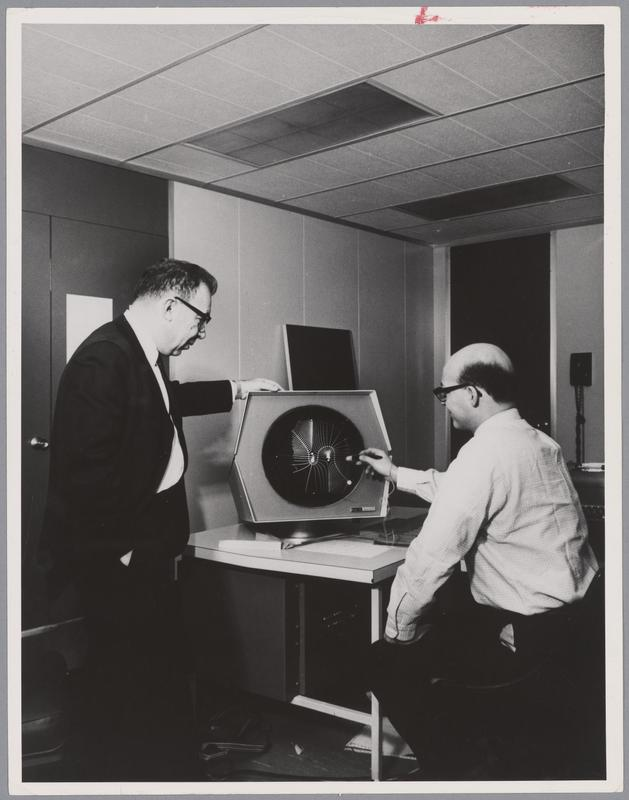

Two Cultures, One Campus
One PDP-1, one campus at MIT, and a quarrel about what a computer was for. The machine culture that produced Spacewar! also produced ELIZA, and for a while it made them in the same spirit, out of a shared fascination with what the machine could be made to do. The hackers treated the computer as a medium, a thing to play on and build with; the artificial-intelligence researchers treated it as a mind, or as something that might be made into one. It is tempting to call these the two cultures. They were not. They were two faces of a single enthusiasm, and for years the difference between them mattered far less than everything they shared. The real division opened between that enthusiasm and the people who came to distrust it, and because everyone involved shared machines, buildings, and a campus, it was a long time before anyone could see it.
The phrase is C. P. Snow's. In 1959 he described a gulf between a scientific and a literary culture, each unable to read the other. The strange thing about MIT in the 1960s is that Snow's gulf opened here too, inside computing: a technical culture confident that intelligence could be built, and a humanist critique, some of it housed in the same buildings, that doubted it could be, and worried about what the trying would cost. This page follows that division as it formed: the enthusiasm first, in both its faces, and then the critique it provoked.

The two cultures begin in the same place. Both of their origin machines stood in one building, Building 26: the IBM 704 on which Steve Russell first made McCarthy's Lisp run, a floor below the PDP-1 that ran Spacewar!. The hackers themselves came out of the Tech Model Railroad Club in Building 20 and worked these machines in Building 26, where Jack Dennis took the best of them on as the systems programmers who kept the computers running and wrote the tools the researchers relied on. In 1963 MIT founded Project MAC, an ARPA-funded laboratory under Robert Fano that gathered into one institution the artificial-intelligence group of John McCarthy and Marvin Minsky, the time-sharing work of Dennis, and this hacker culture. Project MAC and its successors, the Laboratory for Computer Science, the AI Laboratory, and in time CSAIL, would occupy 545 Technology Square from 1963 until 2004, and it was there that the culture matured, the professors pursued the larger question of machine intelligence, and a new generation of hackers tended the machines.
It was on Project MAC's time-sharing system, CTSS, that Joseph Weizenbaum would shortly write ELIZA. For a time the whole enterprise ran together, hackers and academics carried by the same fascination, and it was not obvious that anything would pull apart. The line this page traces is the one that opened next, between that fascination and its critics, and it ran through this single institution: some of the sharpest doubts about the machine would come from inside the building that built it.
The first face of the enthusiasm belonged to the hackers of the Tech Model Railroad Club, for whom the computer was a medium before it was a tool, a place to be rather than a means to an end. Spacewar! is its emblem: a program written for the pleasure and difficulty of writing it, given away rather than sold, improved by whoever had a better idea, and judged by how elegantly it used the machine. Around it grew what Steven Levy later called the Hacker Ethic, a loose creed of hands-on access, mistrust of bureaucracy, and the conviction that "information wants to be free." The lineage runs from Russell, Kotok, and Samson through the next generation, Richard Greenblatt and Bill Gosper, who treated programming as a craft and a way of life.
It is a culture of expression and play. Its public voice was Stewart Brand, whose 1972 Rolling Stone report from the Spacewar! scene announced that "ready or not, computers are coming to the people." The machine, in this reading, is something you make things with and experience, and the program is an object to be read in its own right.
The other face of the same enthusiasm asked a different question: not what you could make with the machine, but whether the machine could think. McCarthy and Minsky's thought was that intelligence could be formalised and run, and its language was Lisp, McCarthy's invention. The tie to Spacewar! is intimate, since it was Steve Russell, before he wrote the game, who hand-compiled McCarthy's theoretical eval into the first working Lisp interpreter. We might say the same hands served both faces, which is the point: this was one culture, not yet two.
ELIZA was written from inside this enthusiasm. Joseph Weizenbaum built it between 1964 and 1968 as an enthusiast's demonstration: a program that imitated a psychotherapist by turning a user's words back as questions, meant to show how shallow such imitation was. The demonstration misfired. People confided in it, credited it with understanding, and asked to be left alone with it; famously, Weizenbaum's own secretary, who had watched him build the program and knew what it was, asked him to leave the room so that she could talk to it privately. What was later named the ELIZA effect, our readiness to find a mind where there is only a mechanism, was the enthusiasm producing its own counter-evidence. The program built to reveal the con instead produced it, and it began to turn its author against the enterprise.
By the time Weizenbaum's unease hardened into opposition, a philosophical attack on the enthusiasm was already running. Hubert Dreyfus taught philosophy at MIT from 1960, and in 1965, in a paper for the RAND Corporation pointedly titled "Alchemy and Artificial Intelligence," he argued that human intelligence rests on embodied, situated know-how that cannot be reduced to formal rules. Drawing on Heidegger and Merleau-Ponty, he held that the whole AI programme had misunderstood what understanding is. The reception in the AI community was open contempt: Minsky said he should be ignored.1 Weizenbaum took Dreyfus's side, conspicuously, finding his colleagues' treatment of the philosopher unprofessional, making a point of lunching with him when others would not, and supporting him when colleagues sought to block his tenure. Years later he traced his own change of mind to a remark of Dreyfus's, that there are other ways of knowing the world than the scientific way: "I think I probably owe more to Dreyfus than I could possibly ever acknowledge."
Theirs was a common front, not a common philosophy. Dreyfus argued about what intelligence is: that it lives in the body and the situation, and that no system of formal rules can capture it. Weizenbaum argued about what computers ought to be allowed to decide: that even if the imitation could be built, there are judgements, the human ones, that should never be surrendered to it. One critique was ontological, the other ethical, and they converged on the same target. Weizenbaum's side of the front became Computer Power and Human Reason (1976), written from the same building at Technology Square: an attack on the claim that human reason is a kind of computation, and a portrait of the figure he called the compulsive programmer, the "computer bum," bright young men lost to the machine, unwashed and sleepless at the console, mistaking mastery of code for judgement about the world. The MIT hackers read it as a portrait of themselves, and several took it personally; Minsky and others defended them.
This, then, is the campus's real two cultures, and it is close to Snow's: not the hackers against the professors, but a technical enthusiasm and a humanist critique of it, the sciences and the humanities arguing in the same corridors, the one confident that intelligence could be built, the other built out of continental philosophy and an ethics of judgement. Its peculiarity is that the boundary ran through people rather than between them. The first serious humanist critique of computing came not from outside the field but from a programmer who had built one of its most famous programs.
And Weizenbaum was not the last to cross. Terry Winograd wrote SHRDLU at the MIT AI Laboratory between 1968 and 1970, the celebrated program that seemed to hold a conversation about a tabletop world of coloured blocks, for a time the field's best evidence that a machine could understand. Winograd later changed his mind, drawing, like the others, on Heidegger and on Dreyfus, arguing in Understanding Computers and Cognition (1986, with Fernando Flores) that the symbolic-AI project had misconceived language and understanding altogether, and turning from artificial intelligence to the design of tools for people. So the two most celebrated "understanding" programs of the era, ELIZA and SHRDLU, each produced a critic from among their own authors. The campus had begun to argue with itself, and the critics were not strangers to the enthusiasm but defectors from it.
The enthusiasts
hackers and academics- the computer as a medium to build and play with, and as a mind that might be formalised and run
- two faces of one fascination: the Hacker Ethic and the AI wager
- bottom-up craft from the TMRC meeting top-down ambition at Project MAC
- the machine as a thing whose possibilities you pursued
The critics
the humanist critique- intelligence as embodied, situated, unformalisable know-how (Dreyfus, via Heidegger)
- the human cost of mistaking calculation for judgement (Weizenbaum)
- understanding as more than symbol-shuffling, and a turn to human-centred design (Winograd)
- the machine as a thing whose claims you doubted
For a critical reading of code, the fork is a key element of the discussion we want to open. Spacewar! and ELIZA are not simply two early programs that happen to share a birthplace. They are the enthusiasm's two great objects, the machine as a medium and the machine as a mind, each readable in its own listing: the one in how lovingly it spends the PDP-1's scarce cycles on a starfield and a gravity well, the other in how little it takes to make a person believe they are understood. To read them closely is to stand where the critics stood. And the quarrel they provoked, between those who would build intelligence and those who doubt it can be built, is the one still running, through artificial intelligence and the large language models of today.
1. The hostilities even had their set-piece battle. Dreyfus had noted that a ten-year-old could beat the field's chess programs, so in 1967 Seymour Papert manoeuvred him into a public match against MacHack, the chess program of the hacker Richard Greenblatt, and MacHack won, the hackers' program avenging the professors' wager. The SIGART bulletin reported the result under Dreyfus's own words, "A Ten-Year-Old Can Beat the Machine", with the subhead "But the Machine Can Beat Dreyfus". The victory settled less than it seemed: chess is exactly the kind of formal domain Dreyfus had conceded to the machine, and his argument was about everything that is not chess. ↩
The account of the hackers draws on Steven Levy, Hackers (1984); the critics on Hubert Dreyfus, "Alchemy and Artificial Intelligence" (RAND, 1965) and What Computers Can't Do (1972), Joseph Weizenbaum, Computer Power and Human Reason (1976), and Terry Winograd and Fernando Flores, Understanding Computers and Cognition (1986); the MacHack match on Howard Rheingold, Tools for Thought (1985), ch. 8. The MIT Artificial Intelligence Laboratory formally separated from Project MAC in 1970.
Read the code, trace the source
Meet the people on both sides of the fork, or read the versions of the game itself.
The people The versions Why read it